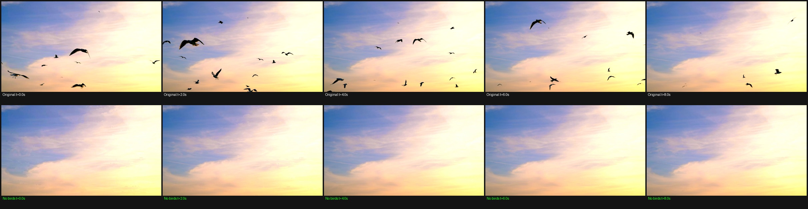

mixkit_45582 — Bird Removal via Temporal Median Filtering
Best result obtained. Clean Plate and EditAnything v2 LoRAs both failed to remove birds. Temporal median filtering removes them perfectly.
Method: For each pixel, compute the temporal median across all 192 frames.
Birds are transient (only occupy a pixel for a few frames), so the median gives the clean sky.
A per-frame difference mask identifies bird pixels, which are replaced with the median value
using a dilated, blurred mask for smooth edge blending.
Why LoRAs failed: Clean Plate LoRA is trained on people/vehicles, not birds.
EditAnything v2 LoRA requires ComfyUI + BFSnodes conditioning (role embedding + AdaLN) that the
standard ICLoraPipeline does not provide — the model just reproduced the input video
without applying the edit instruction, regardless of CFG, seed, or prompt format.
Side-by-side video (8 seconds, 1920×1088)
Left: original with birds. Right: temporal median result, no birds.
No-birds video (standalone)
Frame sheet — 5 frames across 8 seconds
Top row: original (with birds). Bottom row: temporal median (no birds).

Clean plate (temporal median image)
The per-pixel median across all 192 frames — a single static image of the sky with no birds.